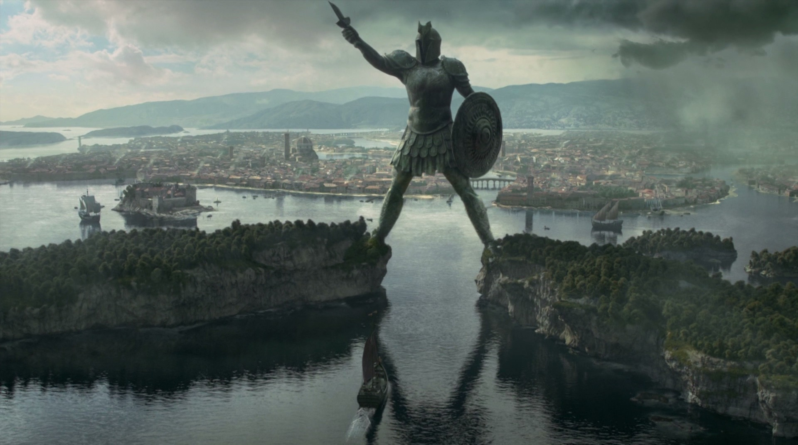
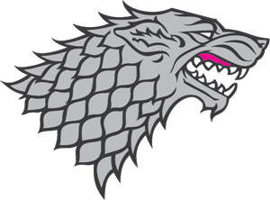
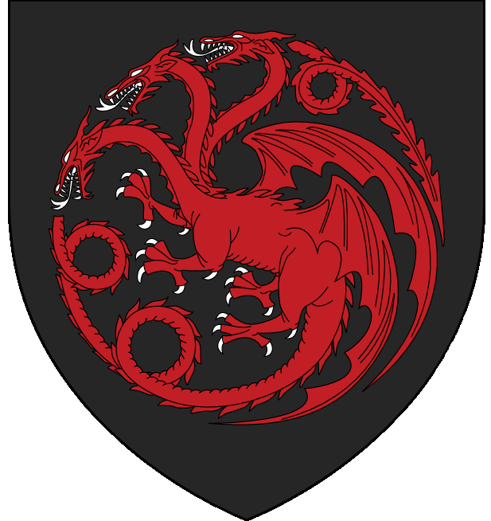
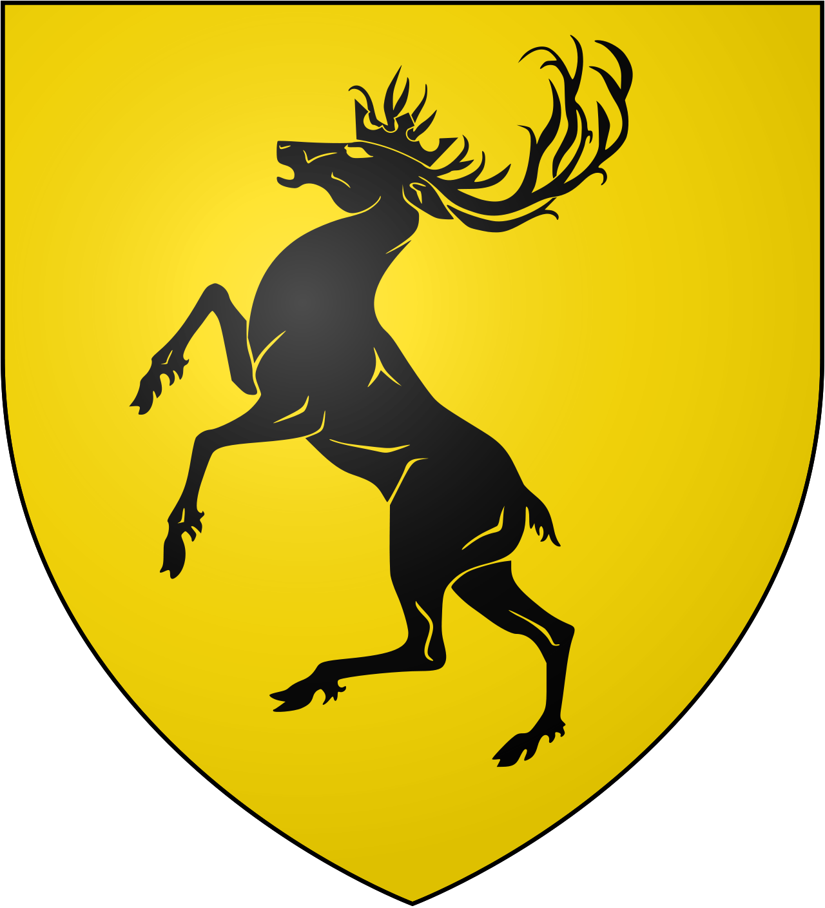

Bienvenidos a MundoGOT, la comunidad hispanohablante número #1 del
universo de Canción de Hielo y Fuego y Juego de Tronos. Un sitio donde
puedes informarte, leer artículos y
noticias sobre el lore de Westeros,
charlar y debatir sobre todo lo relacionado con el universo creado por
George R.R. Martin. Este es el espacio perfecto para todos los que
seguimos, a día de hoy, intentando descrifrar los secretos más
escondidos de los Siete reinos, las teorías locas que harían que Bran
levantara una ceja (o dos, si pudiera), y en definitiva disfrutar en
compañía mientras esperamos con ansia el próximo libro de George.
Nuestros foros están repletos de discusiones sobre cada detalle, desde
la estrategia militar de Robb Stark hasta las sutilezas políticas de la
corte en Desembarco del Rey. ¿Quieres saber cómo habría sido la Batalla
de los Bastardos con la inteligencia de Tyrion Lannister al mando, o si
Cersei realmente tuvo alguna posibilidad de mantener el Trono de Hierro?
Aquí, cada teoría es bienvenida, cada detalle es analizado. Para los
amantes de la historia de Westeros, tenemos secciones dedicadas a la
Danza de Dragones, la Rebelión de Robert, y el misterio de la
desaparición de Benjen Stark.
A través de artículos profundos y discusiones apasionadas, revivimos
estos momentos cruciales, entendiendo cómo han moldeado el presente en
el que nuestros personajes favoritos luchan, aman y traicionan. Y
mientras esperamos ansiosamente el próximo libro de George, "Vientos de
Invierno", mantenemos viva la llama de la esperanza con teorías sobre lo
que nos espera.
El Titán de Braavos es una estatua enorme de piedra y bronce que
guarda la entrada a la laguna interior donde se sitúa Braavos.
¿Será que finalmente descubriremos el destino de los
hijos de la selva o cómo se enfrentará Westeros a la amenaza que se
cierne desde el norte? En MundoGOT, cada día es una celebración del
ingenio y la creatividad que George R.R. Martin ha inspirado en
nosotros. Desde discusiones sobre las complejidades del Valyrio hasta
debates sobre la ética de la magia en Essos, este es un hogar para todos
los que llevan a Westeros y sus misterios en el corazón. Únete a
nosotros en MundoGOT, donde las palabras de los antiguos se hacen
realidad y cada teoría podría ser la clave para desentrañar los secretos
más oscuros de los Siete Reinos. Aquí, en la encrucijada de espadas y
hechizos, tu pasión por "Canción de Hielo y Fuego" y "Juego de Tronos"
encuentra su verdadero hogar.
| Casa Noble | Lema | Insignia | Sede | Personajes Destacados | Alianzas Clave | Estado Actual |
|---|---|---|---|---|---|---|
| Stark | "Se acerca el invierno" |  | Invernalia | Eddard, Jon Snow | Tully, Arryn | Reyes del Norte |
| Lannister | "Un Lannister siempre paga sus deudas" |  |
Roca Casterly | Tywin, Cersei | Baratheon | Decadente |
| Targaryen | "Fuego y Sangre" |  | DragonStone | Aegon, Daenerys | Martell, Tyrell | En guerra (libros), extinta (serie) |
| Baratheon | "Nuestra es la furia" |  | Bastión de Tormentas | Robert, Stannis, Renly | -- | Extinta |